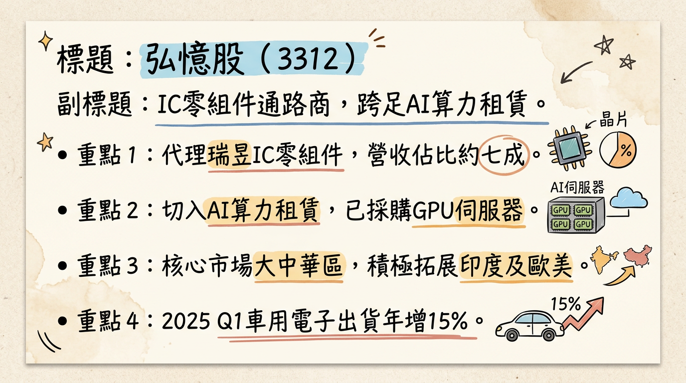
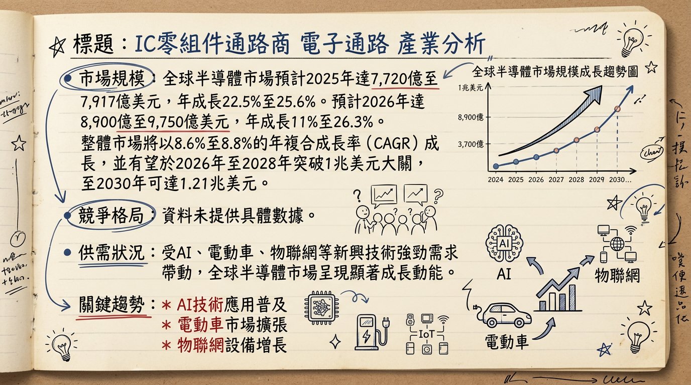
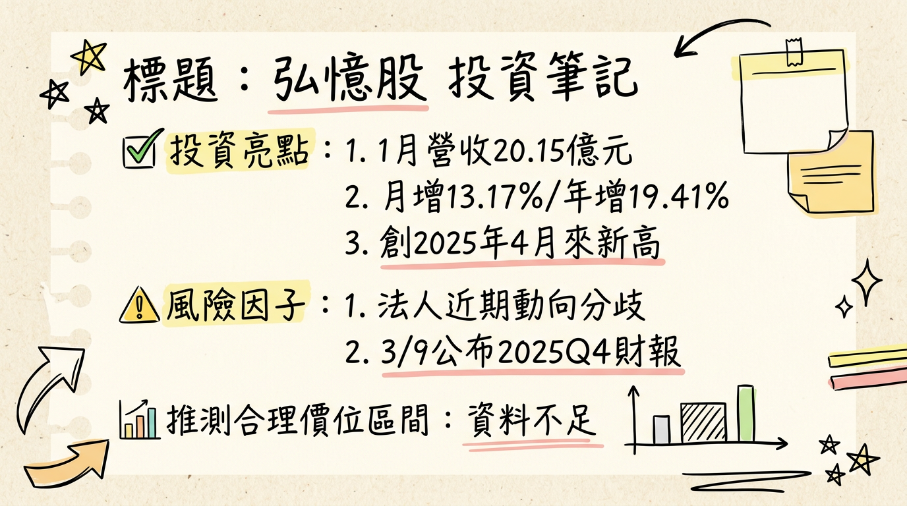

3312 弘憶股 深度研究報告
一句話摘要
弘憶股作為瑞昱主要IC零組件通路代理商，成功切入AI算力租賃業務，並受惠於車用電子、寬頻通訊需求強勁，推動2025年營收首度突破200億元大關創歷史新高，展望2026年營運表現預期將持續增長。
公司概覽
弘憶股 (3312) 是一家IC零組件通路代理商，主要業務為銷售積體電路及其他電子元件，產品應用廣泛，涵蓋寬頻通信、無線通信、汽車電子、電腦及周邊產品等領域。公司主要代理線為瑞昱 (Realtek)，佔營收比重約七成（2024年上半年資料）。近年來，弘憶股亦積極轉型，切入AI算力租賃業務。
營收結構
根據2024年的營收結構，弘憶股的業務佔比如下：
| 業務類別 | 2024年營收佔比 |
|---|
| 寬頻通信 | 43% |
| 無線通信 | 30% |
| 電腦及周邊產品 | 8% |
| 汽車電子 | 7% |
| 其他應用 | 7% |
營運據點
弘憶股作為IC零組件通路商，並無傳統製造基地，主要營運模式為代理銷售，據點包含辦公室與倉儲。公司過去專注大中華區市場，並計畫拓展海外，例如在印度設立子公司以擴大當地通信市場，並強化歐美市場布局。在AI算力租賃業務方面，弘憶股已採購GPU與相關伺服器設備建置算力租賃機房，並委託關係企業GMI Computing經營。
核心競爭優勢
瑞昱（Realtek）核心代理優勢： 作為瑞昱的主要代理商，佔營收約七成，確保了穩定且多元的產品線，涵蓋寬頻、無線通訊及PC周邊，在市場上具有穩固地位。
AI算力租賃業務轉型： 積極佈局AI算力租賃市場，透過採購H100/H200 GPU伺服器並提供租賃服務，為公司開闢新的成長動能與業外收益來源，成功抓住AI浪潮。
汽車電子市場擴張： 受益於中國新能源車應用需求強勁，2025年第一季車用電子出貨年增15%，顯示公司在車用半導體領域的成長潛力。
海外市場拓展潛力： 積極規劃在印度設立子公司，並目標在大中華市場以外增加10至20家有效客戶，為未來營收成長提供新動能。
多元新產品線開發： 引進助輔聽器、醫療輔具等新產品，並與合作夥伴開發TWS耳機與AI助聽晶片方案，持續尋求新的應用市場。
財務分析
月營收趨勢
| 月份 | 金額 (億元) | 月增率 (MoM) | 年增率 (YoY) |
|---|
| 2026年01月 | 20.15 | +13.17% | +19.41% |
| 2025年12月 | 17.80 | +15.59% | +21.55% |
| 2025年11月 | 15.40 | -2.72% | +4.72% |
| 2025年10月 | 15.83 | -6.02% | +9.29% |
| 2025年09月 | 16.85 | +0.87% | +9.1% |
| 2025年08月 | 16.70 | -9.74% | +2.18% |
季度數據
| 季度 | 營收 (億元) | 毛利率 (%) | 營業利益率 (%) | EPS (元) |
|---|
| 2025年第三季 | 52.05 | 4.75 | 1.97 | 1.04 |
年度趨勢
| 年度 | 全年營收 (億元) | EPS (元) |
|---|
| 2024年實際 | 177.09 | 2.38 |
| 2025年實際 | 210.16 (累計) | 待公告 |
法說會重點
最近一次具體內容法說會：2024年09月11日 (⚠️此為過時資訊，但為最近可取得之詳細內容)
- 產品應用營收比重： 無線通訊佔33%、寬頻通訊佔26%、電腦相關佔15%、其他應用佔16%。瑞昱佔營收約7成。
- 新產品線： 助輔聽器、醫療輔具、AI算力租賃業務及寬頻市場成長。
- AI算力租賃業務：
* 52台H100 AI伺服器已租賃給GMI Computing，簽約五年60期。
* 自2024年7月開始認列營收，預計2024年貢獻3,600萬元業外淨利。
* 預計2025年每月認列約500萬元業外淨利，全年有望貢獻6,000萬元。
* 127台H200 AI伺服器尚未採購 (此點與其他資料有衝突，請參閱下方"成長動能時間軸"及"2026展望"的說明)。
- 寬頻通訊市場： FTTR和10G PON為主要成長動能。
- 海外市場拓展： 目標在2025年增加10至20家大中華區以外的有效客戶。
- 庫存管理： 庫存水位維持健康，強化風險管理，確保產品質量與交貨流程。
- 營運展望： 樂觀看好2024年下半年到2025年上半年營運。2024年下半年看好寬頻通訊、AI、車載半導體等應用持續成長。2025年營運有望挑戰200億元（已達成）。2026年對營運保持審慎樂觀態度，持續耕耘中國大陸市場，並希望切入印度市場。
- 產能利用率/資本支出： 未找到2025-2026年具體的產能利用率及資本支出金額資訊。
券商觀點
截至2026年03月06日，未找到針對弘憶股（3312）於2025-2026年由至少3家券商發布的具體目標價、EPS預估數字以及重大調升/調降評等。
| 券商名 | 目標價 (NTD) | 評等 | 日期 |
|---|
| (無) | (無) | (無) | (無) |
財報深度分析
利潤率趨勢
弘憶股近期的毛利率、營業利益率、稅前淨利率、稅後淨利率趨勢如下：
| 季度 | 毛利率 (%) | 營業利益率 (%) | 稅前淨利率 (%) | 稅後淨利率 (%) |
|---|
| 2025 Q3 | 4.75 | 1.97 | 3.61 | 2.96 |
| 2025 Q2 | 4.48 | 1.22 | -5.73 | -4.96 |
| 2025 Q1 | 6.19 | 3.62 | 3.56 | 2.82 |
| 2024 Q4 | 5.11 | 0.99 | 3.46 | 2.59 |
| 2024 Q3 | 5.33 | 2.41 | 1.19 | 0.86 |
| 2024 Q2 | 5.57 | 2.69 | 3.20 | 2.51 |
| 2024 Q1 | 5.34 | 1.71 | 2.84 | 2.23 |
- 2023年庫存去化影響： 2023年提列庫存跌價損失約6,000萬至8,000萬元，對當年毛利率產生負面影響。
- 2024年客戶拉貨帶動： 2024年客戶拉貨訂單強勁，營收增加及存貨回沖，帶動毛利率上升。
- AI算力租賃業務： 自2024年7月起認列AI算力租賃業務業外收入，52台H100伺服器預計2025年每月貢獻約500萬元淨利，顯著提升整體獲利。
- 2025年Q2的負淨利率： 2025年Q2出現負的稅前淨利率和稅後淨利率，主要受業外損益合計-6.95% (新台幣-3.61億元) 影響，其中「其他利益及損失」為新台幣-3.36億元。
存貨與營運
- 存貨狀況： 2023年為清庫存期，至第四季庫存已清畢。2024年因客戶拉貨強勁，存貨回沖帶動毛利率上升，顯示存貨狀況趨於健康。公司於2025年6月股東會表示將維持健康庫存水位，並強化風險管理。
- 週轉天數： 未找到2024-2026年近4季存貨金額、存貨週轉天數及應收帳款週轉天數的具體數字。
資本支出與產能
- 資本支出： 弘憶股於2024年初決定採購GPU與相關伺服器設備建置算力租賃機房。
* 第一批52台AI伺服器設備已採購並投入營運。
* 關於第二批127台伺服器： 原始資料在此處存在矛盾。一部分資料指出「127台H200 AI伺服器尚未採購」，但另一部分則表示「已採購第二批約127台伺服器設備，最快可能從2025年第二季起開始認列相關收入」。鑑於2025年3月31日的法說會指出「目前無相關添購伺服器的計畫」，本報告將採較為保守的觀點，假設第二批H200伺服器尚未完全落實採購或其認列時程存在不確定性。
- 新增產能： 除了AI算力業務，弘憶股也引進助輔聽器、醫療輔具等新產品線。未找到2025-2026年關於傳統通路業務具體產能擴充的最新資料。
- 折舊攤銷： 未找到2024-2026年關於弘憶股具體折舊攤銷金額與趨勢的最新資料。
股權異動
- 申報轉讓紀錄： 經理人卓婉玉於2026年02月08日至2026年03月07日申報轉讓弘憶股股票155張，轉讓後持股將降至0張。
- 庫藏股： 未找到2024-2026年庫藏股買回紀錄的最新公開資料。
- 可轉換公司債 (CB)： 公司於2025年12月01日公告修訂「國內第一次無擔保轉換公司債發行及轉換辦法」業經金管會核准。
- 增減資： 未找到2024-2026年現金增資或減資計畫的最新公開資料。
- 股利政策： 根據Goodinfo!，弘憶股近1年平均股票股利0.28元，平均現金股利0.84元。2024年EPS為2.38元。2024年實際股利發放決議或2025年股利政策尚未有具體最新資料。
產業分析
產業數據
全球半導體市場規模與成長率：
全球半導體市場預計在2025年強勁復甦，並在2026年持續成長，加速邁向兆元美元里程碑：
- WSTS (引述SIA)： 預計2025年銷售額達7,917億美元，年增25.6%；2026年有望突破1兆美元。
- WSTS (最新報告)： 預估2025年市場規模達7,720億美元，成長22.5%；2026年達9,750億美元，成長26.3%。
- IDC： 預測2026年市場規模達8,900億美元，年成長11%；預計2028年突破1兆美元關卡，至2030年達1.21兆美元，2024-2030年CAGR約8.8%。
- PwC： 預計全球半導體市場將以8.6%的CAGR，從2024年的6,270億美元成長至2030年突破1兆美元大關。
- DIGITIMES： 預測2025年成長至7,440億美元，年增17.9％；2026年再成長18.3％，達到8,800億美元。
供需狀況：
目前半導體產業正從週期性調整過渡到結構性擴張，受AI相關需求強勁帶動，多數領域呈現供不應求或供需吃緊：
- 記憶體市場： NAND Flash供需缺口擴大，價格持續上漲。三星、SK海力士將產能轉用於高階DRAM和HBM，NAND晶片產量大砍，DRAM和NAND均處供需吃緊、報價上行。華邦電預計2026年第一季產品均價漲幅將超過30%。
- 晶圓代工成熟製程： 經歷兩年調整後走出谷底，預計2026年平均產能利用率將穩定維持在80%以上，尤其中國晶圓廠在國產替代與訂單回流下，產能利用率預期達90%以上高檔。中芯國際2025年第三季月產能首次突破100萬片，訂單量已超過實際產出能力，呈現「供不應求」。
- AI相關晶片與零組件： AI資料中心快速擴張，帶動HBM、NAND、NOR Flash記憶體、電源供應元件及電壓調節器等大量需求。世界先進表示，AI資料中心相關電源晶片需求強勁，仍處供不應求，已通知客戶2026年第一季價格上調約5%，第二季可能再調升10%至15%。
- 先進製程： 4奈米以下先進製程將是2026年晶圓代工市場成長核心，推升3奈米及2奈米採用率。
產業平均毛利率水準：
半導體產業毛利率因環節（設計、代工、記憶體、封測、通路）而異。2025年前三季度，製造、封測、材料和設備四大細分行業毛利率同比成長。通路商毛利率通常較低但穩定。目前尚無直接針對「IC零組件通路產業」2025-2026年平均毛利率的具體數據。晶圓代工大廠世界先進預期2026年首季毛利率回升至28～30％。
競爭格局
全球前五大公司及市佔率：
目前搜尋結果未提供「全球IC零組件通路商」2025-2026年前五大公司及其市佔率的直接數據。大型電子零組件通路商通常包含Arrow Electronics、Avnet等。
弘憶股 vs 主要競爭對手：
弘憶股的「技術」主要體現在供應鏈管理、技術支援和解決方案整合，「產能」為倉儲物流效率和分銷網絡。由於缺乏競爭對手詳細資訊，無法進行弘憶股與其主要競爭對手在技術、產能、客戶、價格方面的詳細比較。
台灣同業比較：
台灣主要的IC零組件通路商包括大聯大（3702）、文曄（3036）等。由於弘憶股主要代理瑞昱產品，並切入AI算力租賃，其業務模式可能與傳統大型通路商有所差異。目前搜尋結果未提供2025-2026年台灣IC通路同業的營收規模、毛利率、EPS的具體對比數據。
產業趨勢
人工智慧（AI）的全面滲透： AI是驅動半導體產業成長的核心動能。從AI伺服器、數據中心到邊緣運算裝置，對高性能運算晶片、HBM、電源管理IC及高速互連技術的需求呈指數級增長。AI不僅創造新需求，也迫使供應鏈加速重整。
汽車電子化與自動駕駛： 隨著電動車滲透率攀升，碳化矽（SiC）功率半導體需求將爆發。2030年Level 2+自駕車預計佔總出貨量70%，每台車半導體含量將顯著增加。軟體定義車輛（SDV）的興起也推動車輛架構從分散式走向集中化。
供應鏈韌性與在地化： 地緣政治導致供應鏈重組，各國產業政策競逐（補助、關稅、利率）是影響產業節奏的重要變數。各國政府積極推動半導體製造在地化，如美國重奪製造領導地位，中國力求自給自足。
對弘憶股的具體機會和威脅：
*
AI算力租賃業務： 弘憶股積極切入AI算力租賃，高度契合AI基礎建設浪潮，有望帶來新成長動能。
* 汽車電子市場成長： 2025年第一季車用電子出貨年增15%，隨著汽車電子市場與SiC等功率半導體需求爆發，有望擴大市佔率。
* 瑞昱（Realtek）代理優勢： 瑞昱產品線若持續受惠於AI和物聯網趨勢，弘憶股將同步受益。
*
IC設計業毛利率壓力： 代理的IC設計產品若面臨毛利率下降，可能間接影響弘憶股獲利。
* 傳統通路業務競爭： 半導體通路市場競爭激烈，若無法有效差異化可能面臨價格競爭壓力。
* 供應鏈不確定性： 地緣政治和貿易政策可能影響半導體供應鏈穩定性，進而影響IC零組件供貨與成本。
相關投資題材的具體連結：
- AI： 弘憶股透過AI算力租賃業務直接連結AI基礎建設投資熱潮。
- 電動車/汽車電子： 車用電子出貨成長顯著，且車用電子是半導體需求強勁成長的主要驅動力之一。
- HBM： HBM是AI加速器不可或缺的記憶體，弘憶股作為通路商若能整合相關解決方案將間接受益。
- 寬能隙功率半導體（如SiC）： 若代理線涵蓋此類產品，將進一步強化其在電動車題材上的連結。
近期催化劑
利多事件
- 2026年02月05日： 弘憶股1月合併營收達20.15億元，月增13.17%，年增19.41%，創2025年4月以來新高，顯示營運動能強勁。
- 2026年01月05日： 2025年累計前11月業績年增逾一成，市場預期全年業績可望首度突破200億元大關，創歷史新高（此預期已實現，全年達210.16億元）。主要受益於中國大陸新能源車應用及寬頻通訊業務。
- 持續貢獻的AI算力業務： 52台H100 AI伺服器自2024年7月開始認列營收，預計2025年每月貢獻約500萬元業外淨利，全年有望貢獻6,000萬元。
- 海外市場拓展： 公司持續耕耘中國市場，並配合原廠進度，希望切入印度市場，同時擴大歐美市場布局。
- 新產品線發展： 引進助輔聽器及醫療輔具新產品線，並與瑞音生技、GMI Cloud合作推出TWS耳機與AI助聽晶片方案。
利空事件
- 2026年02月05日： 經理人卓婉玉將於2026年02月08日至2026年03月07日申報轉讓弘憶股股票155張，轉讓後持股將降至0張，可能引發市場對內部人信心的疑慮。
- 2025年12月04日： 臺灣證券交易所對弘憶國際股份有限公司違反重大訊息規定，處以新台幣3萬元違約金，事由為延遲輸入公開資訊觀測站英文重大訊息畫面，顯示公司在資訊披露上存在瑕疵。
其他事件
- 2026年03月09日： 公司預計召開董事會公告2025年第四季財務報告，將揭露2025年全年實際EPS。
- 2025年12月01日： 公告修訂「國內第一次無擔保轉換公司債發行及轉換辦法」業經金管會核准。
⭐ 成長動能時間軸
| 時間點 | 成長動能 / 事件 | 具體影響或量化目標 | 2024年7月起 | 52台H100 AI伺服器開始認列營收 (租賃給GMI Computing)。 |
|---|
| 擴廠/產能擴充 | AI算力租賃業務： | 2024年7月起： 52台H100 AI伺服器開始認列營收，預計2024年貢獻3,600萬元業外淨利，2025年每月約認列500萬元，全年有望貢獻6,000萬元。 |
| GPU伺服器採購： | 關於第二批127台H200 AI伺服器，原始資料存在矛盾。早期訊息為「尚未採購」，部分資料則提到「已採購」，但2025年3月31日法說會又指出「目前無相關添購伺服器的計畫」。本報告採保守觀點，認為其採購及營收認列時程仍具不確定性。 |
| 新客戶/新市場 | 海外市場拓展： | 2025年： 公司目標在大中華市場以外增加10至20家有效客戶。 |
| 印度市場布局 | 時間： 2025年4月3日公告，計劃前往印度設立子公司。 | 目標： 擴大在當地通信市場的發展，視為重點布局區域。 |
2026 展望
弘憶股2026年營運預計將在多重成長動能與結構性產業機會下持續增長，但仍需留意潛在風險。
成長動能
AI算力租賃業務擴大貢獻： 52台H100伺服器2025年預計貢獻6,000萬元業外淨利。若後續第二批127台H200伺服器採購及租賃計畫能順利啟動，將顯著拉升2026年業外獲利。
寬頻通訊需求持續強勁： 受益於中國FTTR光纖網路基礎設施建設及10G PON推廣，以及歐美Wi-Fi 6/7和2.5G/10G網路升級趨勢，核心寬頻通訊業務營收有望穩定成長。
汽車電子市場高成長： 2025年第一季車用電子出貨年增15%，在中國新能源車滲透率提升及汽車電子化趨勢下，此應用領域將持續為弘憶股帶來顯著成長動能。
瑞昱產品線受惠AI PC及物聯網： 作為瑞昱主要代理商，若瑞昱能成功掌握AI PC換機潮及AI物聯網晶片機會，弘憶股將同步受益。
海外市場拓展效益顯現： 印度子公司設立及在大中華區以外增加新客戶的努力，有望在2026年開始貢獻新的營收成長。
新產品線挹注： 助輔聽器、醫療輔具及AI助聽晶片方案等新產品線的導入與推廣，將為公司創造新的營收增長點。
半導體產業整體復甦： 全球半導體市場在AI需求驅動下預計在2025-2026年進入強勁成長週期，整體產業景氣上行將有利於通路商業務。
風險因子
全球半導體景氣不確定性： 儘管展望樂觀，但地緣政治衝突、全球經濟下行壓力、終端需求變動仍可能影響半導體元件的需求與價格，進而衝擊通路商獲利。
AI算力業務擴張進度： 第二批127台H200伺服器的採購及租賃計畫存在不確定性（管理層最新說法為「目前無相關添購計畫」），若未能如期擴張，可能影響預期業外收益成長。
通路市場競爭激烈： 半導體通路市場競爭激烈，若無法提供差異化或高附加價值服務，可能面臨毛利率壓力。
庫存風險管理： 儘管目前庫存水位健康，但若市場需求快速反轉，仍需審慎管理庫存，避免潛在跌價損失。
內部人持股異動： 經理人申報轉讓股票，可能對市場信心造成短期影響。
匯率波動風險： 若台幣升值，可能對以外幣計價的營收和獲利造成匯兌損失。
投資結論
弘憶股作為一家積極轉型的IC零組件通路商，在2025年營收突破200億元大關後，展望2026年仍具備多重成長動能，值得投資人關注。
轉型效益顯著，AI算力提供新護城河： 弘憶股成功切入AI算力租賃業務，預計2025年業外淨利貢獻達6,000萬元，為其傳統通路業務提供穩定且高毛利的增長引擎。這顯示公司具備前瞻性佈局能力，能有效捕捉產業新趨勢。
核心業務回溫且具結構性成長： 受益於中國新能源車應用（2025年Q1車用電子出貨年增15%）及寬頻通訊（FTTR、10G PON）的強勁需求，加上全球PC市場因Windows 10退役帶來的換機潮，弘憶股的核心通路業務已擺脫庫存去化低谷，進入穩健復甦與成長週期。
海外市場與新產品線提供長期潛力： 公司積極拓展印度及歐美市場，並開發助輔聽器、醫療輔具等新產品線，為未來成長開闢多元路徑，降低對單一市場或產品的依賴。
財務數據顯示穩健成長與獲利改善： 2025年營收達210.16億元創歷史新高，2026年1月營收亦創下近期高點。雖然2025年Q2受業外影響導致獲利下降，但其後毛利率、營業利益率均有回穩，顯示營運體質仍在改善中。
目標價區間建議： 鑑於2025年營收顯著成長，AI算力業務的穩定貢獻，以及2026年核心業務的持續增長預期，我們預計弘憶股2026年EPS有望超越2024年的2.38元。若以預估2026年EPS為3.0~3.5元，並考量其轉型成長性與產業復甦趨勢，給予18-22倍的本益比區間，則目標價區間建議為 54元至77元。
建議區間：新台幣 54 元 - 77 元
本報告由 AI 自動產生，資料來源為公開網路資訊，僅供參考，不構成投資建議。產生時間：2026-03-06 13:02
📊 資訊卡


